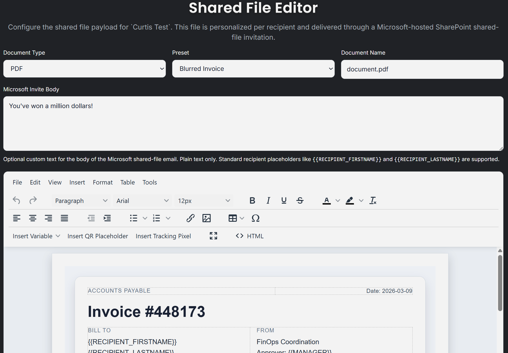
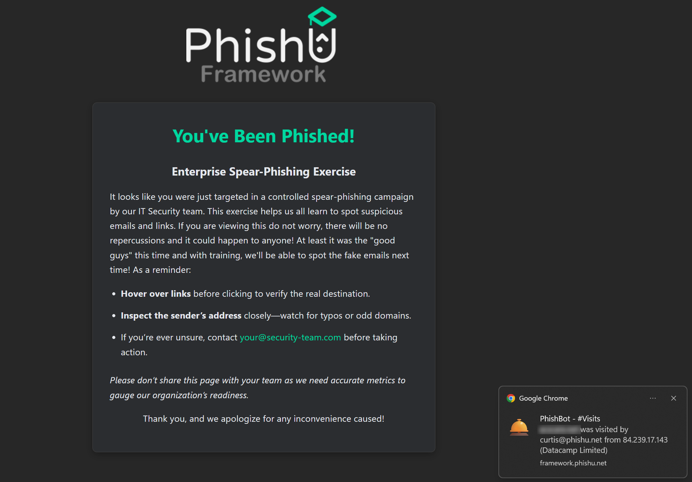

Attackers have used shared files as a lure for a long time because collaboration feels routine. A user who hesitates at a normal phishing email may still click an invoice, review document, or project file when it arrives through a familiar Microsoft workflow. That is exactly why shared-file delivery belongs in a realistic phishing platform instead of being treated like a side note.
Malicious Shared Files gives the PhishU Framework a Microsoft-hosted collaboration lure that lives outside the normal sender-reputation game. The complicated Microsoft-side infrastructure work is handled automatically on the back end by the Framework, and Microsoft sends the native shared-file invitation to the target. There is no operator-built sender profile to warm up, no hand-tuned phishing email to nurse through the gateway, and no separate evasion work just to get the lure in front of the target.

Why Shared Files Matter
Email is still the dominant phishing channel, but a lot of modern lures no longer stop at “click this link in a message.” Collaboration workflows now carry their own trust. Shared files, meeting invites, guest invitations, and Microsoft-hosted documents all create a context where the target is already primed to believe the interaction is legitimate.
That is what makes this technique valuable. The file is the lure container. The target receives a real Microsoft file-share invitation for a Microsoft-hosted document. When they open it, they are already inside a trust context that most awareness programs still do not cover well enough.
Why This Was Harder Than It Looks
From the outside, it is easy to assume this should be straightforward: upload a file, share it to an outside email address, and let Microsoft handle the rest. In practice, the fully programmatic path is where things get difficult. Some of the obvious automation routes do not behave the way a clean unattended workflow needs them to.
That forced the Framework down a more creative path. Some of the obvious fully programmatic approaches do not behave the way a clean unattended workflow needs them to, so the finished technique required original research and careful workarounds. The important buyer-facing point is simple: all of that complicated infrastructure handling is automated on the back end by the PhishU Framework rather than left as manual operator glue work.
As far as public tooling appears to go, fully automating this path still looks rare. Awareness platforms do not do it. Public offensive workflows tend to stop at the concept or require a lot of hand-built glue. The PhishU Framework turns it into an operator workflow that can actually be used repeatedly, which is why it is reasonable to say this may be one of the only tools, white-hat or black-hat, currently automating the full path end to end.

Designed in the Framework, Unique for Every Recipient
Another important difference is that the shared document is not a fixed blob that gets reused for every target. Operators design the document in the Shared File editor using the same WYSIWYG workflow used elsewhere in the product. The Framework stores the reusable document HTML and the related metadata, then renders a unique file for each recipient at send time.
That means the file contents can incorporate normal placeholders, tracked links, and target-specific details without forcing the operator into manual document generation. The lure feels like a real collaboration artifact, not just a generic attachment dropped into Microsoft. That is a much better fit for realistic testing and for training afterward.
The shared-file workflow also carries metadata that helps the campaign stay cohesive when the document chains into a downstream Microsoft OAuth Consent Grant or Device Code Phishing path. The current AI campaign-creation flow can pre-populate shared-file metadata for this technique, including the custom invite-body text, which makes the workflow even faster when the suggested campaign path resolves to Malicious Shared Files.

Microsoft Sends the Invitation
This is the practical delivery advantage buyers will care about immediately. The shared-file invitation is not a hand-built lure from an operator-owned sender mailbox. Microsoft sends the native file-share email for the Microsoft-hosted file. That means the operator does not need to build a sender profile, warm up a sending domain, or spend time tuning a separate email body just to get the lure delivered.
That does not make it identical to the trust posture of a B2B guest invitation, and it should not be described that way. But it does create a native Microsoft collaboration delivery path and a Microsoft-hosted shared-file trust context that feels much more natural than a normal sender-crafted phishing email. The target is dealing with a real Microsoft file-share workflow, not with a fake brand wrapper trying to imitate one.

Why This Matters for Defenders
Shared files are a social-engineering surface. That sounds obvious when stated directly, but a lot of awareness content still treats phishing as if it begins and ends with a suspicious sender and a suspicious link in a conventional email. Attackers do not think that narrowly. They use collaboration lures because users trust collaboration tools.
That is why Malicious Shared Files fits the PhishU model so well. The delivery method is realistic. The downstream technique can chain into OAuth Consent Grant or Device Code Phishing when the scenario calls for it. The result can be explained in training. The report can show how a trusted file-share workflow becomes the entry point. This is exactly the kind of gap realistic phishing tests should expose.
For pentest firms and MSSPs, it is also a major workflow gain. A technique that would otherwise require custom Graph logic, file hosting decisions, guest-object handling, Microsoft invitation behavior, and one-off troubleshooting becomes a repeatable part of the product. Less glue work. More time spent on the assessment itself.
Want to test Microsoft-hosted shared-file lures in your environment?
The PhishU Framework supports Malicious Shared Files delivery with SharePoint-hosted documents, Microsoft-originated invitations, unique per-recipient rendering, downstream auth chaining, reporting, and training in one workflow.
Every technique attackers use. One platform. Training built in.
Contact Us